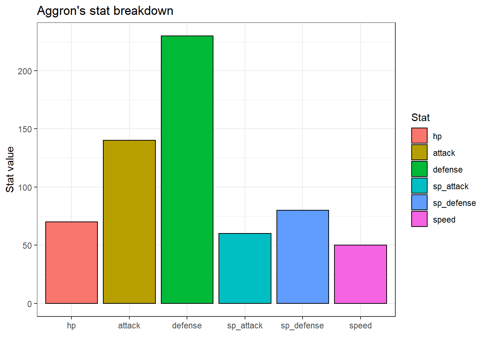
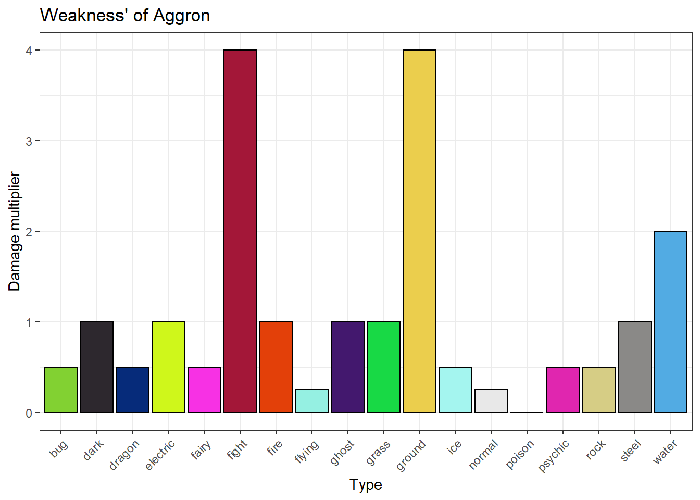

Front page Data visualisation Directory structure SQL R-package Bibliography Reproductibility CV The future
To prove my ability to create a package based on previous code, I have created the “PokemonAnalyse” package, a package created to analyse a pokemon dataset. This package is available on the public repository linked here. The package can be installed using the following command:
devtools::install_github("PedroDeBos/PokemonAnalyse", build_vignettes = TRUE)The package has been created to incorporate 4 commands: pokemon_legendary, type, stats and weakness
pokemon_legendary states whether the selected pokemon is a legendary or not
library(PokemonAnalyse)
pokemon<-pokemon
pokemon_legendary("Aggron")## [1] "Aggron is not a legendary pokemon"pokemon_legendary("Arceus")## [1] "Arceus is a legendary pokemon"pokemon_type determines the types of the selected pokemon
pokemon_type("Aggron")## $Aggron
## [1] "Aggron is a steel and a rock type"pokemon_type("Arceus")## $Arceus
## [1] "Arceus is a normal type"pokemon_stats gives the stats of the selected pokemon in the form of a plot
pokemon_stats("Aggron")
and finally, pokemon_weakness gives a spread of the weaknesses of the selected pokemon, also in the form of a plot
pokemon_weakness("Aggron")
each of these commands include a help page when using “?pokemon_stats”. Furthermore, the package also contains the “pokemon” dataset, provided by Rounak Banik on kaggle under a CC0 license. And finally, the package also contains a “vignette” page, which can be accessed by the command vignette(“pokemonAnalyse”) or the command browseVignettes(“PokemonAnalyse”)